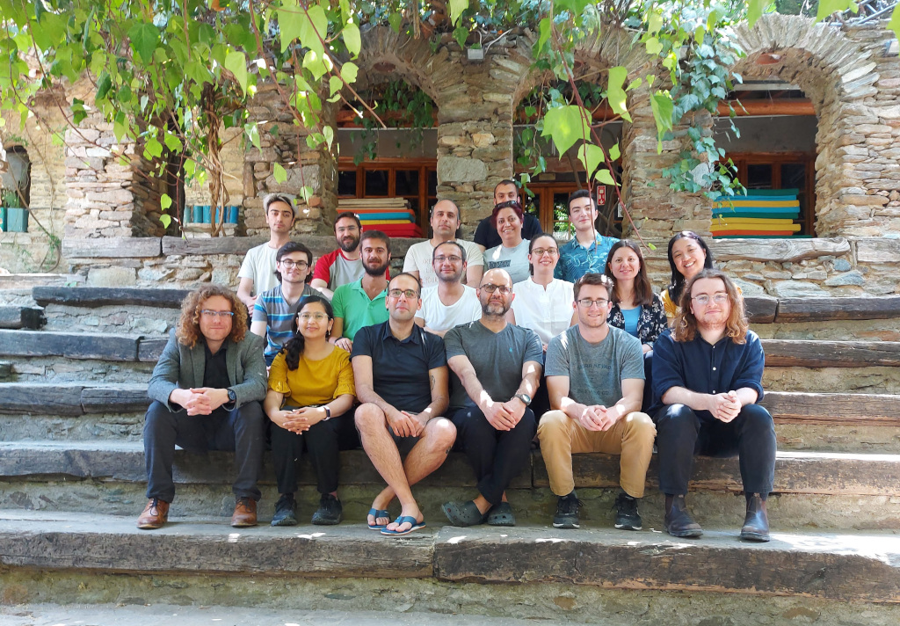

| Feb 2023 - Current | Postdoc Research scientist at RICAM, Linz. |
| 2019 - Jan 2023 | PhD Research scientist at RICAM, Linz. |
| 2019 - 2023 | PhD in Mathematics | JKU-Linz, Austria |
| 2015 - 2018 | MSc in Mathematics International (Specialization: Algebra and Number theory) | TU Kaiserslautern, Germany |
| 2012 - 2015 | BSc in Physics, Chemistry, Mathematics (Triple Major) | St. Joseph's College, Bangalore, India |

Group photo with the participants of Workshop on Integer Partitions at the Nesin Mathematics Village, Turkey.